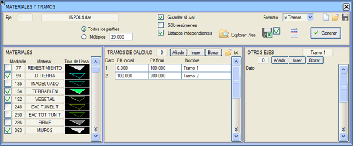
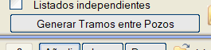
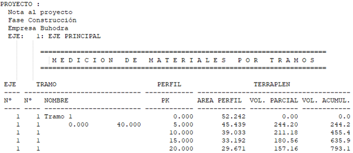
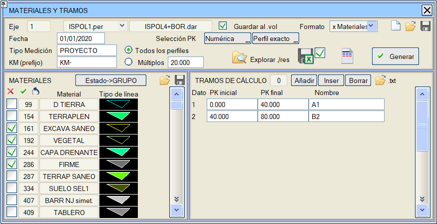
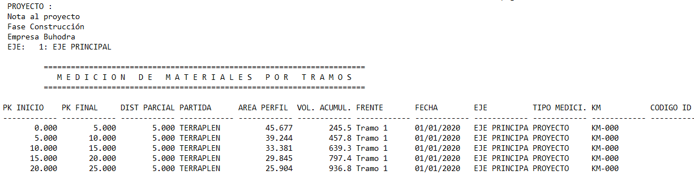

|
|
|
MALZEMELER VE GÜZERGAH KESİMLERİ
|
Malzemeler ve Güzergah Kesimleri aracı, belirtilen güzergah kesimleri için metraj tablosuna göre bir metrajı olan seçili malzemelerin listelerini oluşturur. 
Genel Kullanım Bu aracı başarılı bir şekilde kullanmak için eksenin önceden hesaplanmış olması tavsiye edilir. Ayrıca, PROJE sekmesindeki ilgili bölümde yüklenmiş olması gereken bir imalat takip dosyası üzerinde de kullanılabilir. Temel kullanım yöntemi basittir: Pencerenin sol tarafında çalışmak istediğimiz malzemeler seçilir. Pencerenin orta kısmında kullanılacak güzergah kesimleri oluşturulur. Oluştur butonuna basıldığında liste oluşturulur. Pencerenin sol tarafındaki malzeme listesi şu sütunları sunar:
Sağ tarafta diğer eksenler listesi bulunur: her kesim için, diğer eksenlerin belirli kesimlerine karşılık gelen metrajlar eklenebilir. Bu araç ayrıca aşağıdaki özelliklere sahiptir:
Boru Hatları projeleri için, bacalar arasındaki kesimleri otomatik olarak oluşturma seçeneği mevcuttur:  Rapor Formatları Varsayılan rapor formatı Kesimlere Göre'dir. Bu mod etkinken, malzeme listesinde seçilen malzemelerle, hesap kesimlerinde belirtilen kesimlere bölünmüş bir rapor oluşturulur. Eğer proje, PROJE menüsündeki Üstyapıyı Dahil Et seçeneği ile hesaplandıysa ve herhangi bir üstyapı tabakası seçilirse, kesimin başlangıç KM'sinden itibaren birikimli sulama (aplikasyon) alanını içeren bir sütun da eklenir. 
Başka bir rapor formatı daha vardır: Malzemelere Göre. Bu modda, başlangıç KM'sine karşılık gelen kilometre ile yazdırılacak tarih, metraj türü ve önek de belirtilebilir: 
Aynı format için rapora Ara Hacim sütunu da eklenir. Oluşturulan rapor aşağıdaki sütun dağılımına sahiptir. 
|
 :
Raporu .xlsx formatında oluşturur.
:
Raporu .xlsx formatında oluşturur. :
Raporların bulunduğu .\res klasörünü açar.
:
Raporların bulunduğu .\res klasörünü açar.